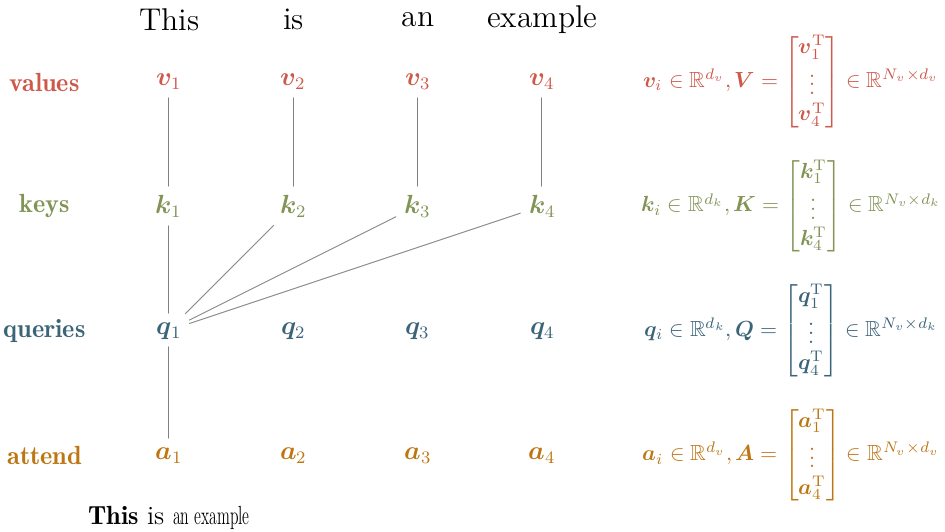
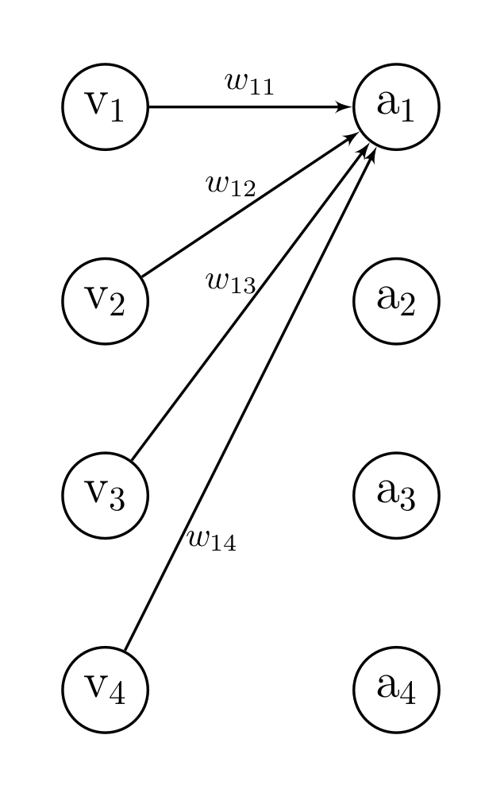
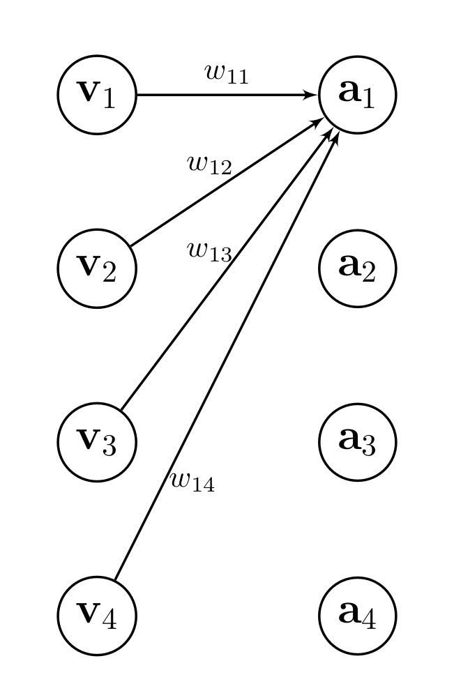

import math
import torch
def attention(
query_matrix: torch.Tensor,
key_matrix: torch.Tensor,
value_matrix: torch.Tensor
) -> torch.Tensor:
"""Simplistic implementation of scaled dot-product attention.
Args:
query_matrix (torch.Tensor): shape [batch_size, N_v, d_k]
key_matrix (torch.Tensor): shape [batch_size, N_v, d_k]
value_matrix (torch.Tensor): shape [batch_size, N_v, d_v]
Returns
torch.Tensor: shape [batch_size, N_v, d_v]
"""
scale_factor = 1 / math.sqrt(query_matrix.size(-1))
# compute unnormalized attention weights of shape [batch_size, N_v, N_v]
attn_weights = scale_factor * query_matrix @ key_matrix.transpose(-2, -1)
# normalize attention weights (i.e., sum over last dimension equal to one)
normalized_attn_weights = torch.softmax(attn_weights, dim=-1)
# compute result of shape [batch_size, N_v, d_v]
return normalized_attn_weights @ value_matrix In essence, an attention mechanism can be intuitively understood as a means to assign individual importance (or rather attention) to each entity in a collection of entities (e.g., words in a sentence or pixels in an image) using some cues as input. Mathmatically, this translates into computing a weighted average over all entities. In the attention mechansim from the Attention is all you need, the attention weights are obtained from the attention cues.
More abstractly, the attention mechanism can be used to answer the following questions
- What entities (e.g., pixels or words) should we attend to or focus on?
- What entities (e.g., pixels or words) are relevant for the task at hand?
Vaswani et al. (2017) call their particular attention mechanism Scaled Dot-Product Attention. Therein, the collection of entities is termed values and the attention cues are termed queries and keys. Attention to particular values (entities) is obtained by computing the weighted average over all values (entities) in which the attention weights are obtained by combining the attention cues.
The attention cues (queries and keys) are vectors of length \(d_k\) defined per value and can be seen as representations of questions (queries) and facts (keys): E.g., we could imagine a query representing the question Are you a noun? and a corresponding key representing the facts Noun, positive connotation, important, female. The alignment between the attention cues is computed via the dot-product (hence the name), additionally the alignment scores are passed through a Softmax-layer to obtain normalized attention weights. Finally, these attention weights are used to compute the weighted average.
To speed things up, queries, keys and values are packed into matrices \(\textbf{Q}, \textbf{K} \in \mathbb{R}^{N_v \times d_k}\) and \(\textbf{V} \in \mathbb{R}^{N_v \times d_v}\), respectively. As a result, the concise formulation of Scaled Dot-Product Attention is given by
\[ \text{Attention}(\textbf{Q}, \textbf{K}, \textbf{V}) = \underbrace{\text{softmax} \left( %\overbrace{ \frac {\textbf{Q} \textbf{K}^{\text{T}}} {\sqrt{d_k}} %}^{\text{attention alignment } \textbf{L} \in } \right) }_{\text{attention weight }\textbf{W} \in \mathbb{R}^{N_v \times N_v}} \textbf{V} = \textbf{A} \]
in which \(\frac{1}{\sqrt{d_k}}\) is an additional scalar which Vaswani et al. (2017) added to counter vanishing gradients (they hypothesize that for a higher cue dimension \(d_k\) the dot-product might grow large in magnitude).
The figure below highlights how the corresponding vectors are packed into matrices and which vectors are used to obtain the first attention vector \(\textbf{a}_1\).
|  |
|---|
| Scaled Dot-Product Attention: Matrix Packing and Computation Schematic |
The result matrix \(\textbf{A}\) has the same dimensionality as \(\textbf{V}\) and in fact each entry \(\textbf{a}_i\) is basically a (normalized) linear combination of the vectors \(\{\textbf{v}_j\}_{j=1}^{N_v}\)
\[ \textbf{a}_i = \sum_j w_{ij} (\textbf{q}_i, \textbf{k}_j) \textbf{v}_j \quad \text{with} \quad \sum_j w_{ij} (\textbf{q}_i, \textbf{k}_j) = 1. \]
In this formulation, it is obvious that scaled-dot product attention means basically computing a weighted average over all entities. Furthermore, each attention vector \(\textbf{a}_i\) has a fixed query vector \(\textbf{q}_i\) which explains the name query.
Difference between Attention and Fully Connected Layer
The equation above looks surprisingly similar to a fully connected layer with no bias and same dimensionality between input \(\textbf{v}_i \in\mathbb{R}^N\) and output \(\textbf{a}_i \in \mathbb{R}^N\). In this case, we could describe the output of a fully connected layer as
\[ \text{a}_i = \sum_j w_{ij} \text{v}_j. \]
If we would pass the weight matrix \(\textbf{W} \in \mathbb{R}^{N\times N}\) through a softmax layer, we could even achieve the following
\[ \text{a}_i = \sum_j w_{ij} \text{v}_j \quad \text{with} \quad \sum_{j} w_{ij} = 1. \]
So what’s the difference between an attention and a fully connected layer?
In fact, the only difference is the value dimensionality \(d_v\), i.e., in case of \(d_v = 1\) there is no difference.
|  |  |
|---|---|
| Linear Layer | Attention Layer |
Implementation
Causal / Masked Attention
In fact, the attention mechanism defined above allows access to all future values in the sequence, e.g., the first entry \(\textbf{a}_1\) is a (normalized) linear combination of all vectors \(\{\textbf{v}_j\}_{j=1}^{N_v}\). This may be problematic when the values are generated on the fly (e.g., next-token prediction).
To address this, we can rewrite the attention mechanism as follows
\[ \textbf{a}_i = \sum_{j=1}^{i} w_{ij} (\textbf{q}_i, \textbf{k}_j) \textbf{v}_j \quad \text{with} \quad \sum_{j=1}^{i} w_{ij} (\textbf{q}_i, \textbf{k}_j) = 1. \]
This can be done by using the standard attention mechansim and masking out future values
\[ w_{ij} (\textbf{q}_i, \textbf{k}_j) = 0 \quad \text{for} \quad j \ge i. \]
The weights can be concisely written into a weight matrix \(\textbf{W} \in \mathbb{R}^{N_v \times N_v}\) and the above equation basically sets the upper triangular part to zero.
Thus, it is fairly simple to make the attention mechanism causal, see the implementation below.
import math
import torch
def attention(
query_matrix: torch.Tensor,
key_matrix: torch.Tensor,
value_matrix: torch.Tensor,
is_causal: bool = False,
) -> torch.Tensor:
"""Simplistic implementation of scaled dot-product attention allowing for causal masking.
Args:
query_matrix (torch.Tensor): shape [batch_size, N_v, d_k]
key_matrix (torch.Tensor): shape [batch_size, N_v, d_k]
value_matrix (torch.Tensor): shape [batch_size, N_v, d_v]
is_causal (bool): whether to mask out future values
Returns
torch.Tensor: shape [batch_size, N_v, d_v]
"""
scale_factor = 1 / math.sqrt(query_matrix.size(-1))
# compute unnormalized attention weights of shape [batch_size, N_v, N_v]
attn_weights = scale_factor * query_matrix @ key_matrix.transpose(-2, -1)
# normalize attention weights (i.e., sum over last dimension equal to one)
normalized_attn_weights = torch.softmax(attn_weights, dim=-1)
if is_causal:
causal_mask = torch.ones_like(attn_weights).tril(diagonal=0)
normalized_attn_weights = causal_mask.mul(normalized_attn_weights)
# compute result of shape [batch_size, N_v, d_v]
return normalized_attn_weights @ value_matrix
Multi-Head Attention
In the transformer architecture introduced by Vaswani et al. (2017), they use multi-head attention layers which are essentially adapted parallelized scaled-dot product attention layers defined as follows
\[ \begin{align*} &\text{Multi-Head}(\textbf{Q}, \textbf{K}, \textbf{V}) = \text{Concat} (\text{head}_1\, \dots, \text{head}_h) \textbf{W}^O \\ &\quad \text{with} \quad \text{head}_i = \text{Attention}(\textbf{Q} \textbf{W}_i^Q, \textbf{K} \textbf{W}_i^K, \textbf{V} \textbf{W}_i^V), \end{align*} \]
where linear projections parametrized by \(\textbf{W}_i^Q \in \mathbb{R}^{ d_{\text{model}} \times d_k}, \textbf{W}_i^K \in \mathbb{R}^{ d_{\text{model}} \times d_k}, \textbf{W}_i^V \in \mathbb{R}^{ d_{\text{model}} \times d_v}\) and \(\textbf{W}^O \in \mathbb{R}^{ d_v \times hd_{\text{model}}}\) are learnable parameters (i.e., linear layers without bias).
Note that without \(\textbf{W}^O\) and adapted linear projections using the following dimensions \(\textbf{W}_i^Q \in \mathbb{R}^{ d_{k} \times d_k}, \textbf{W}_i^K \in \mathbb{R}^{ d_{k} \times d_k}, \textbf{W}_i^V \in \mathbb{R}^{ d_{v} \times d_v}\), multi-head attention would just be parallelized scaled dot-product attention. The projections are simply used to create different representations of the query, key and value matrices (otherwise each head would look exactly the same, e.g., assume that each \(\textbf{W}_i^{Q / K / V}\) is an identity matrix).
Using \(d_{\text{model}}\) instead of \(d_k / d_v\) for the linear projections is an architectural decision to reduce the number of trainable paramters whithout losing too much expressiveness. The concatenation plus linear layer increases the expressiveness of the model, since it allows the model to jointly combine attention representations of different subspaces.
 |
|---|
| Multi-Head Attention Layer: Linearly project values, queries and keys \(h\)-times into model dimension, apply scaled-dot-product attention, concatenate result (attention in different subspaces) and linearly project once again (simply increase the expressiveness). Image taken from Vaswani et al. (2017). |
Below is a simplistic implementation of multi-head attention using the masked attention implementation above.
import math
import torch
class MultiheadAttention(torch.nn.Module):
def __init__(self, d_model: int, h: int, is_causal: bool, d_k: int, d_v: int) -> None:
super().__init__()
self.is_causal = is_causal
self.h = h
# linear projections for Q, K and V (h times)
self.W_Q_i = [torch.nn.Linear(d_k, d_model, bias=False) for _ in range(h)]
self.W_K_i = [torch.nn.Linear(d_k, d_model, bias=False) for _ in range(h)]
self.W_V_i = [torch.nn.Linear(d_v, d_model, bias=False) for _ in range(h)]
# linear projection for concatenated result
self.W_o = torch.nn.Linear(d_model*h, d_v, bias=False)
def forward(self, Q: torch.Tensor, K: torch.Tensor, V: torch.tensor) -> torch.tensor:
"""Forward method for MultiHeadAttention
Args:
Q (torch.Tensor): shape [batch_size, N_v, d_k]
K (torch.Tensor): shape [batch_size, N_v, d_k]
V (torch.Tensor): shape [batch_size, N_v, d_v]
Returns
torch.Tensor: shape [batch_size, N_v, d_v]
"""
# compute attention heads [head_1, ..., head_h]
# head_i has shape: [batch_size, N_v, d_model]
att_heads = [attention(query_matrix=self.W_Q_i[i](Q),
key_matrix=self.W_K_i[i](K),
value_matrix=self.W_V_i[i](V),
is_causal=self.is_causal)
for i in range(self.h)]
# concatenate result shape: [batch_size, N_v, d_model*h
concat_heads = torch.concatenate(att_heads, dim=-1)
# feed through last linear layer
return self.W_o(concat_heads)